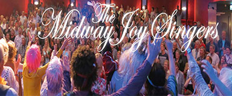

<div class="event-info">
	<div>
		<div class="img-wrap">
	
		</div>
		<div class="songs">
			<p>At The End Of The Day</p>
			<p>I Dreamed A Dream</p>
			<p>One Day More</p>
			<p>Start A Fire</p>
			<p>Feeling Good</p>
			<p>Thankfull</p>
			<p>Uptown Funk</p>
		</div>
		<div class="content-wrap">
    <p><strong>The Midway Joy Singers’ uit Halfweg</strong></p>
	<p>The Midway Joy Singers’ tellen zo'n 45 leden.</p>
	<p>Op het repertoire staan indringende muziekstukken met een verhaal en tevens fijne popsongs die de ruimte geeft eens lekker te swingen.</p>
	<p>&nbsp;</p>
	<p>Dirigent: Hein Verheijen</p>
	<p>&nbsp;</p>
	<p><a href="http://www.midwayjoysingers.nl" target="_blank">http://www.midwayjoysingers.nl</a></p>
	<p><a href="https://www.facebook.com/TheaterkoorTheMidwayJoySingers/" target="_blank">https://www.facebook.com/TheaterkoorTheMidwayJoySingers/</a></p>
		</div>
	</div>
</div>
